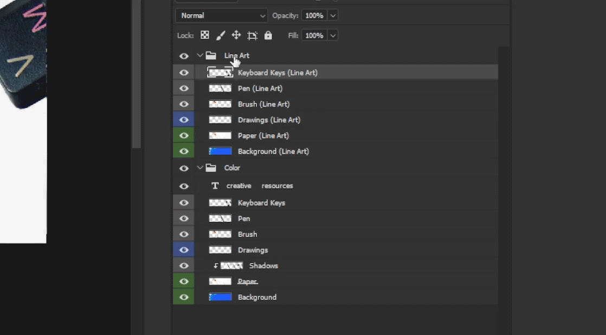
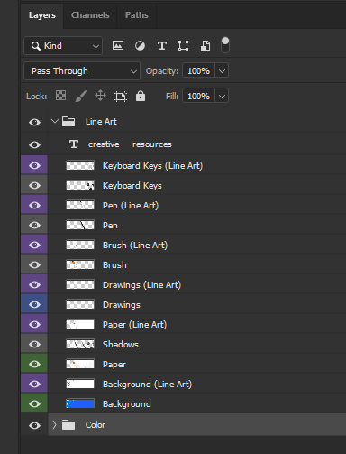

Workflow - General
Resolution Templates
| Medium | DPI |
|---|---|
| =300dpi | |
| Web / Digital | >=72dpi |
| Format | Resolution |
|---|---|
| HD, Standard 16:9 | 1920x1080 @72dpi or higher |
| QHD, 1440p, 16:9 | 2560x1440 @72dpi or higher |
| 4k, Standard 16:9 | 3840x2160 @72dpi or higher |
Physical Prints
TO DO
File Best Practices
Name layers or objects logically
# Example
- Main Character
- BG Character 1
- Tree 1
- Tree 2
- Vehicle 1
- BG Character 2
- BG
Color code layers
Right-Clickthe layer in Photoshop / GIMP to change the layer color

- e.g. all layers for the main character are blue
- e.g. all layers for background objects are grey
- This makes it easy for someone else to understand without examining the entire document and making their own notes

Name files logically
yyyymmdd_company_job_asset_version.psd- See naming conventions below
Check color info (RGB vs CMYK)
Image > Mode- Going to print? Choose CMYK
- 8-bit vs 16-bit color depth?
- In Photoshop some filter effects are unavailable in 16-bit or higher color modes
- Copy layer(s) over to a temporary 8-bit color document window, run the filter, and copy them back
Prefer PNG over JPG
- PNG is lossless in quality
- Exporting as PNG's contain little to no metadata
TIP: if you want to see, edit, add, or remove metadata, use exiftool
Naming Conventions
Using a logical naming convention will make it easier for you to track files in a hierarchy.
Do your own version control, and do not rely solely on cloud version backups.
It can be difficult and time consuming to download, rename, and review file versions one by one should you need to.
Using a folder hierarchy:
- /COMPANY/PROJECT/SUB-FOLDER/YYYYMMDD/
Using a filename hierarchy:
- YYYYMMDD_COMPANY_PROJECT_ASSET-NAME.VERSION.file
Using both files and folders:
- /COMPANY/PROJECT/SUB-FOLDER/DRAFT_X/ASSET-NAME.VERSION.file
Working Example:
You're tasked with creating a first draft of a vehicle to be used as a background element.
Three different versions are needed, version 3 has an A and B.
- /COMPANY/PROJECT/PROPS/DRAFT_01/20220104_VEHICLE_A.V001.psd
- /COMPANY/PROJECT/PROPS/DRAFT_01/20220104_VEHICLE_A.V002.psd
- /COMPANY/PROJECT/PROPS/DRAFT_01/20220104_VEHICLE_A.V003a.psd
- /COMPANY/PROJECT/PROPS/DRAFT_01/20220104_VEHICLE_A.V003b.psd
The next day you receive feedback, and versions 1 and 2 get their first revisions.
You increment the date and the revision number.
- /COMPANY/PROJECT/PROPS/DRAFT_01/20220105_VEHICLE_A.V001.R001.psd
- /COMPANY/PROJECT/PROPS/DRAFT_01/20220105_VEHICLE_A.V002.R001.psd
Another way to do this:
- /COMPANY/PROJECT/PROPS/DRAFT_01/20220104_VEHICLE_A.V001.psd
- /COMPANY/PROJECT/PROPS/DRAFT_01/20220104_VEHICLE_B.V001.psd
- /COMPANY/PROJECT/PROPS/DRAFT_01/20220104_VEHICLE_C.V001a.psd
- /COMPANY/PROJECT/PROPS/DRAFT_01/20220104_VEHICLE_C.V001b.psd
Revisions:
- /COMPANY/PROJECT/PROPS/DRAFT_01/20220104_VEHICLE_A.V002.psd
- /COMPANY/PROJECT/PROPS/DRAFT_01/20220104_VEHICLE_B.V002.psd
In some cases it may make more sense to name the files by:
COMPANY_PROJECT_ASSET_VERSION_YYYYMMDD
This will keep the files in an alphanumeric order based on the assets rather than the date within the filesystem.
Other variations of time-based names include:
YYYYMMDD_hhmmss (Year,Month,Day_Hour,Minute,Second)20220321_124519
In all cases, do what makes the most sense for you. These are just ideas you can take and improve upon.
File Size & Disk Space
Raster Graphics Documents
Photoshop, GIMP, Krita, any layered raster graphics document
- If you need to change only one element (e.g. a face)
- Keep the original layer
- Create the revision as a layer, in the same document
- Use a 'main' working PSD and export static images with the versioning scheme in their filenames
- You can still correlate revision-to-PSD with this naming convention
- If you see the PSD has no revision number, assume the revisions exist as layers